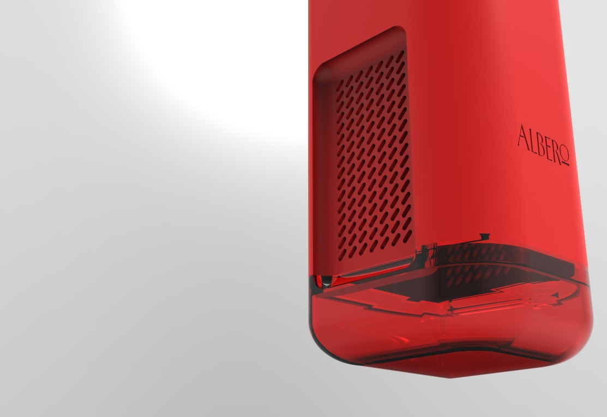
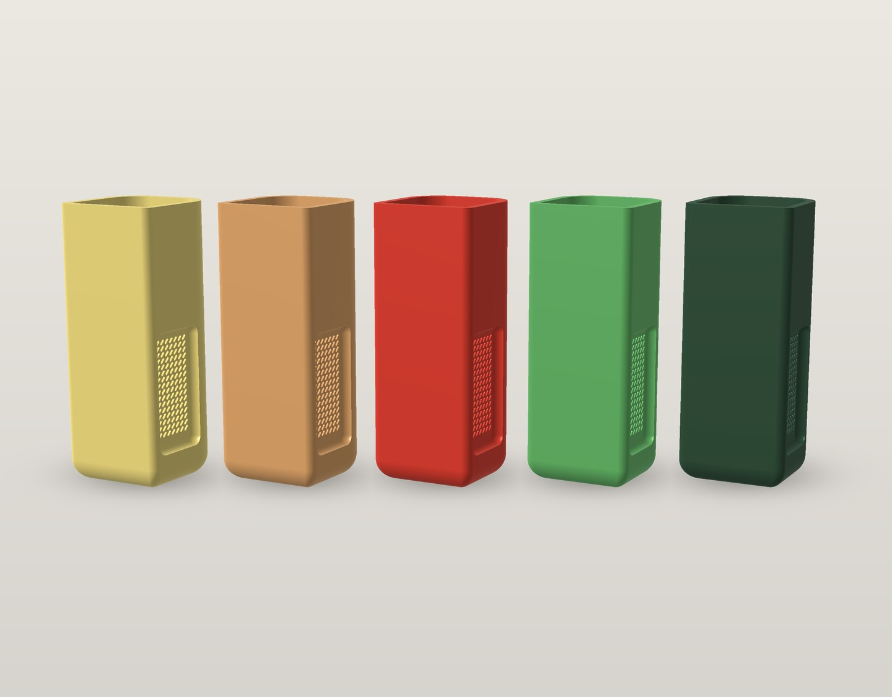

Um vaso que cuida da planta e do ar ao redor dela.

Contexto
Conforto também é o que não se vê.
O ponto de partida foi a ambientação: o conforto de um espaço vai além da organização de objetos e móveis.
Ele também passa pelo sensorial e pelo imaterial, como a umidade e a qualidade do ar que se respira. O Albero é um vaso que trabalha nessa camada invisível, com a planta no centro do sistema.
Desafio
Um objeto só, que junta vaso, controle de umidade e purificação de ar, e usa a água tirada do ar para regar a própria planta.
O sistema
A água que o Albero tira do ar é a mesma que mantém a planta viva. Cada etapa alimenta a próxima.

Por dentro
Vaso, corpo e reservatório se empilham numa coluna de base quadrada com cantos arredondados. Role para abrir o Albero.
No topo fica a planta. Uma corda conecta o vaso à água armazenada e leva a umidade até a terra, sem bomba.
Na grade lateral, ventoinhas puxam o ar para dentro e o fazem passar pelos filtros. O corpo é de polímero sinterizado, capaz de condensar a água do ambiente.
Toda a água condensada desce para o reservatório translúcido, que alimenta a corda do vaso.
Montado, o sistema some. A tecnologia fica dentro de um objeto que poderia estar em qualquer estante.
Meu papel
Desenvolvemos o Albero em trio, com todos participando de todas as etapas, do conceito ao modelo final.
Cores
A família de cores vem do próprio universo da planta: flor, terra, fruto, folha e mata. Dá para testar cada uma no modelo 3D da seção Por dentro.
Resultado
O projeto terminou com o modelo 3D completo no Fusion, pronto para render, com as três peças detalhadas e encaixadas.
Medidas do modelo 3D final.
Renders originais no Behance ↗